Implementation, results and verification limits · Open local preview
These are captures from the working site. Before and after equipment use identical crop rectangles and a 2× display scale. Comparisons retain their native screenshot size; scroll horizontally on a narrow window.
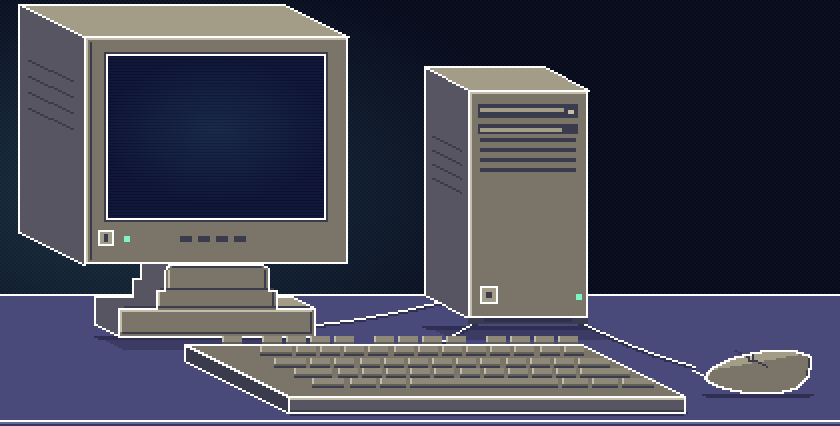
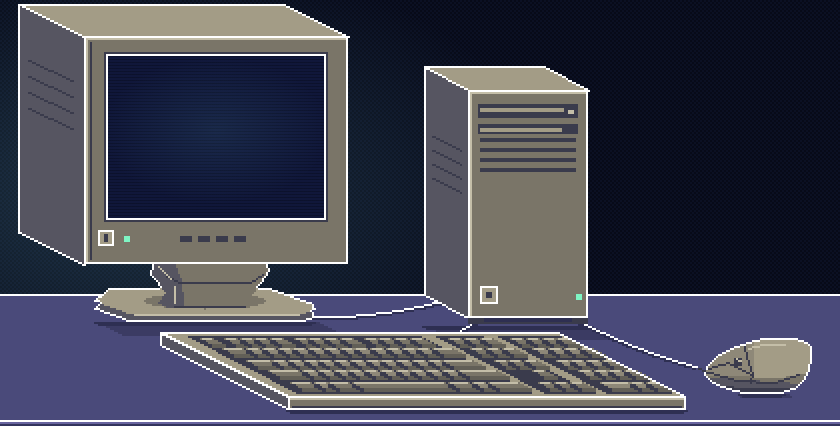
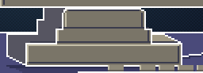
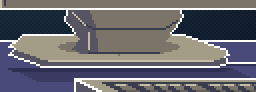
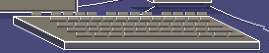
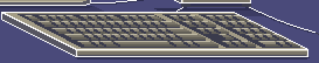
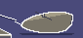
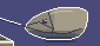
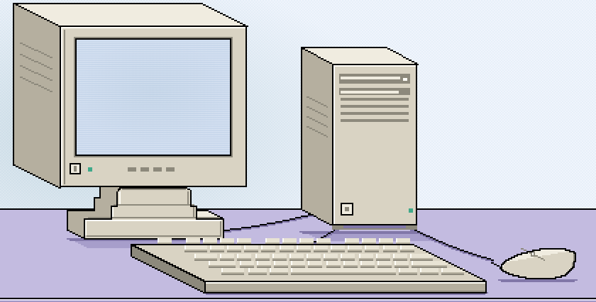
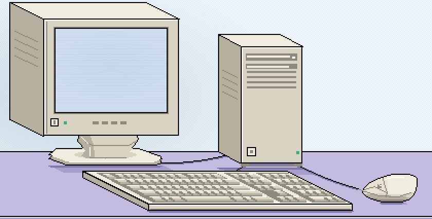
A short index beside three folded fingers, a separate thumb and a violet cuff. The fingertip anchor sits over the press point while the palm is offset to its right.
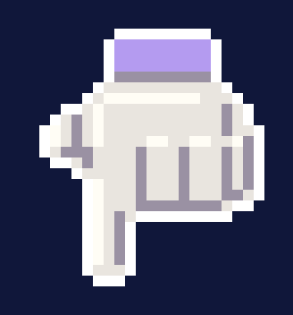
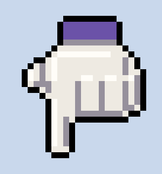
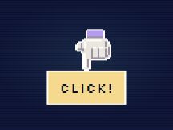
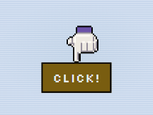
After the third dot's hold: two dots at 1850ms, one at 1970ms, empty at 2090ms. These crops retain the full frame's scale. Open a crop for its full screenshot.
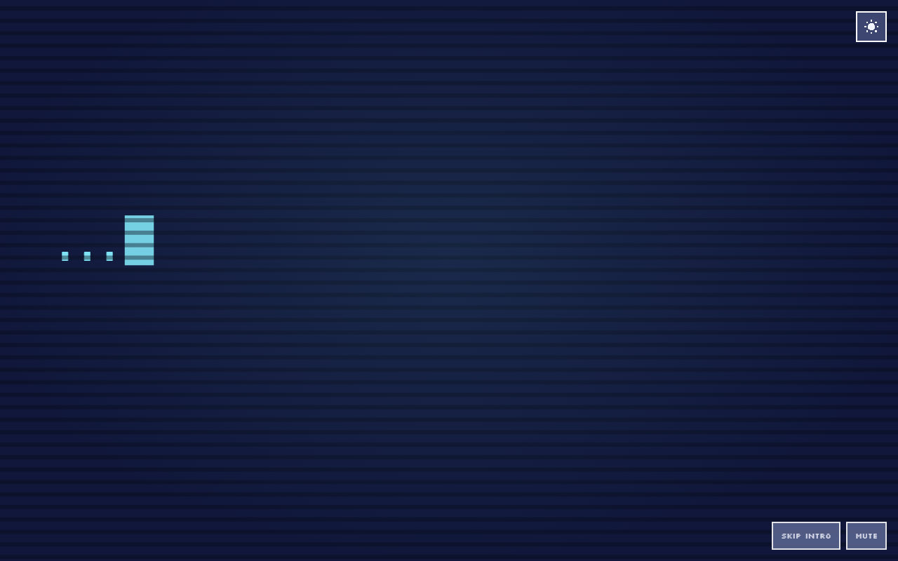
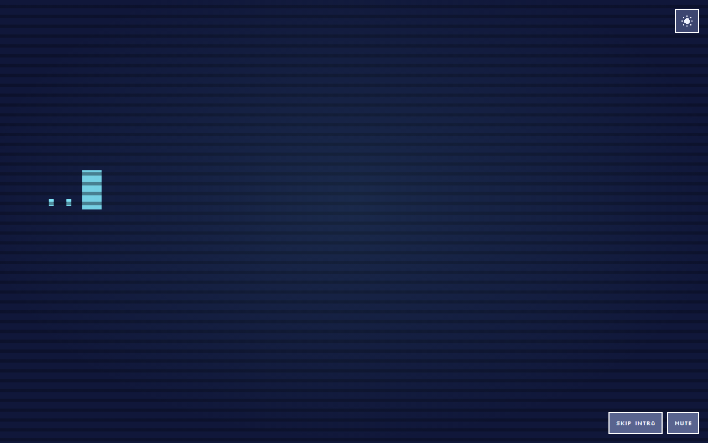
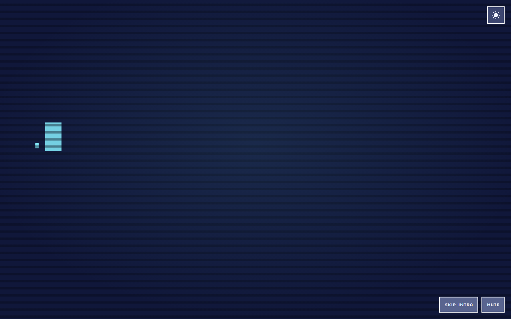
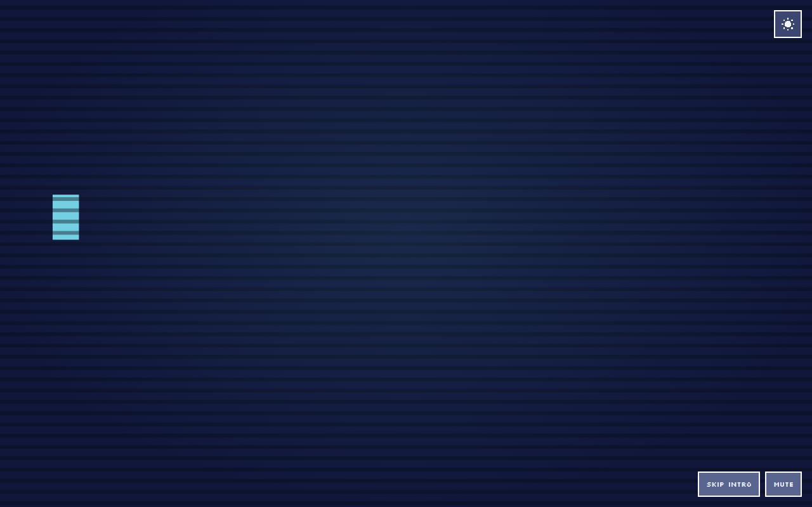
Play with sound for the explicit replay, introduction, two invitation cycles, activation, desktop entry and return. The recording carries the measured master output.
Audio only · 22 audio and lifecycle checks
Reviewed visually through decoded recording frames. Digital output was measured; no perceptual listening pass was performed here. Speaker/headphone loudness, timbre, device latency and Safari/iOS audio remain unverified.
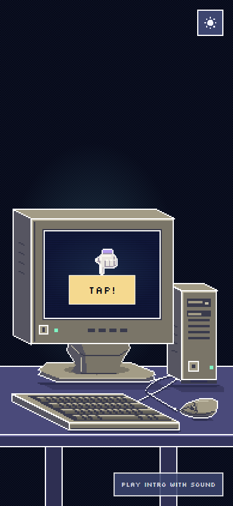
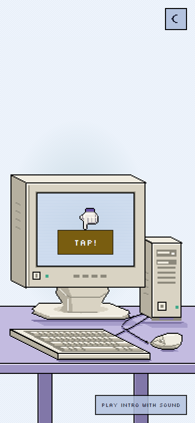
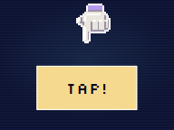
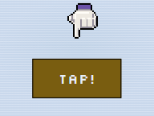
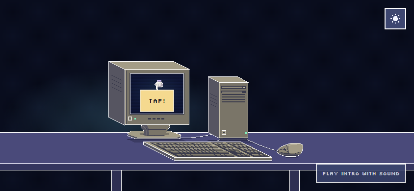
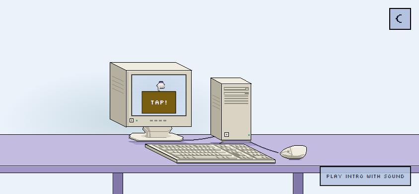
Local review evidence only. Work remains uncommitted and is not deployed.
{kind=link}
{kind=link}
{kind=link}
{kind=link}
{kind=link}
{kind=link}
{kind=link}
{kind=link}